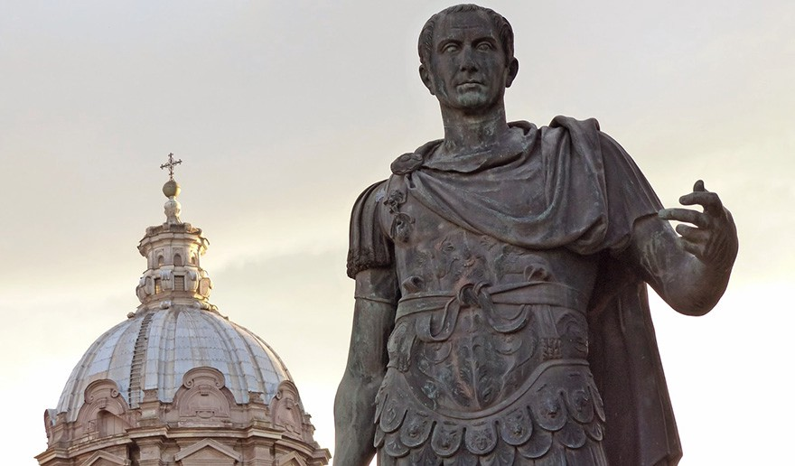

Julio César (13 de julio de 100 a. C. – 15 de marzo de 44 a. C.) líder militar y político. Nació en Roma. Creció en la época tardorrepublicana. Era natural de la dinastía de los Julios que hacía parte del patriciado romano, debido a la importancia y prestigio de su familia Julio César recibió la mejor educación del momento, se educó bajo la guía de maestros griegos. Lo anterior le permitió conocer de cerca a los hombres más influyentes de su época, uno de ellos fue su tío Cayo Mario, quien tuvo una fuerte influencia en su carrera política. En 84 a. C., fue nombrado por el popular Cinna: Flamen Dialis, cargo religioso del que fue relevado por Sila, con quien tuvo conflictos a causa de su matrimonio con la hija de Cinna.Por fortuna se salvó de ser asesinado al escapar, luego de un tiempo fue perdonado gracias a la intercesión de sus parientes. Julio César se trasladó a la provincia de Asia, combatió en Mitilene como legatus de Marco Minucio Termo. Tuvo que interrumpir su proceso para retornar a Roma al recibir la noticia de la muerte de Sila. Estando en Roma fue abogado por un tiempo. En 73 a. C. sucedió a su tío Cayo Aurelio Cota como pontífice, y pronto construyó una amistad con los cónsules Pompeyo y Craso, ellos le brindaron el respaldo para lanzar su carrera política. En 70 a. C. fue cuestor en la provincia de Hispania y edil curul en Roma. Ofreció unos espectáculos para el pueblo que fueron recordados durante mucho tiempo.
Juventud de Julio César
Julio César empezó a acercarse en su juventud al partido político «popular». Se ganó el apoyo de la plebe gracias no solo a los impresionantes espectáculos y celebraciones para el gozo del pueblo sino también por sus obras públicas. Dentro de los cargos políticos que desarrolló a lo largo de su carrera: cuestor, edil, gran pontífice, pretor y propretor de la Hispania Ulterior en todos llevo a cabo una gran cantidad de obras públicas. En ese momento de auge de Julio César logró que Craso y Pompeyo se reconciliaran políticamente. Para ello, tuvo que crear un acuerdo para repartir el poder; formando un triunvirato.Debemos mencionar que en el periodo en que más aumentó su popularidad fue en el cargo de cónsul. Repartió lotes de tierra entre veteranos y parados, aumentó los controles sobre los gobernadores provinciales y les dio más relevancia a las discusiones del Senado. Pero la ambición política hizo que Julio César buscara la manera de obtener un poder personal absoluto, tuvo el poder de varias provincias: Galia Cisalpina, Narbonense e Iliria. También promulgó el Convenio de Luca con la intención de fortalecer el triunvirato, pero respondía a un equilibrio inestable, que evolucionó a la concentración del poder en una sola mano.
Poder como Emperador

Julio César acumuló cargos y honores que fortalecieran su poder personal que lo llevaron a ser un emperador con derecho de transmisión hereditaria, aunque rechazó la diadema real que le ofreció Marco Antonio. El Senado fue reducido a un mero consejo del príncipe. En tal sentido, instauró una disimulada dictadura militar. La vida de este importante hombre terminó, el 15 de marzo de 44 a.C., cuando fue asesinado en una conjura dirigida por Casio y Bruto. Realmente quedaron muchas de sus reformas a medio camino, pero algunas fueron terminadas por encargados.Por ejemplo, el cambio del calendario, una nueva ley municipal que concedía mayor autonomía a las ciudades o el reasentamiento como agricultores de las masas italianas proletarizadas. Lo que hizo Julio César fue transformar Roma en una ciudad-estado, al tiempo que se iba transformando su vieja constitución oligárquica por una monarquía autoritaria de tintes populistas; ahora bien, su obra sería completada por su sobrino-nieto y sucesor, Octavio Augusto./h3>